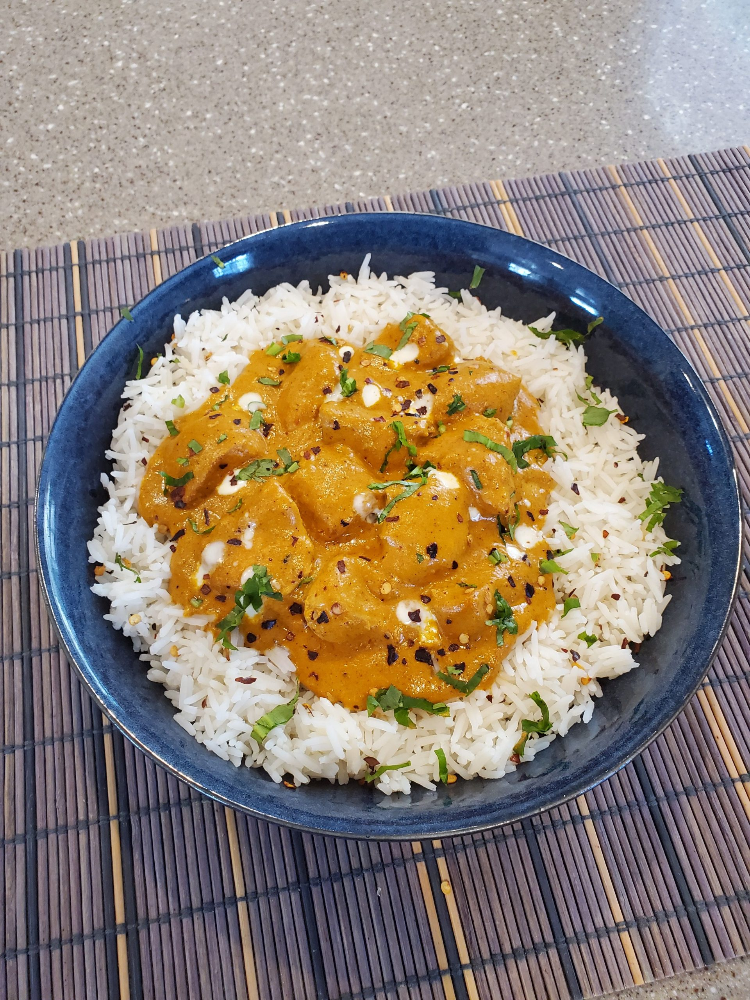

Rice
Rice is one of the meal liked in Zambia. It is at times taken in place of
nshima as sweet rice or with relish like Chikanda, Chicken, Pock and others.
In Zambia it is also eaten at special ocassions with chicken, bief or pock
to mention a feel.
Ingredients
- Rice
- Salt
- Cooking oil or Butter
- Paper or Your favourite Rice Spice
Steps
- put water in a port and had a bit of salt(option) then start cooking
- add cooking oil or butter to water to prevent rice from sticking
- let water become look warm and add rice a bit more than half the volume of water
- now add your desired spice
- let water wich was on to dissaper and your Rice is Ready
- you can now serve Rice with your favourite Relish